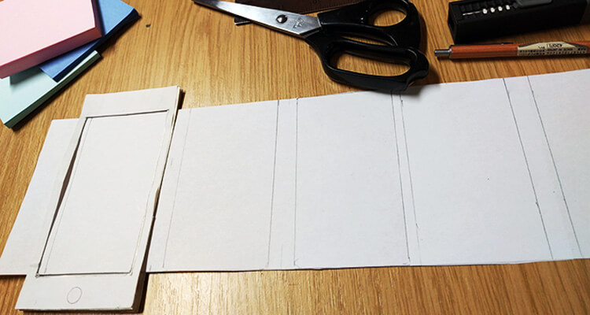
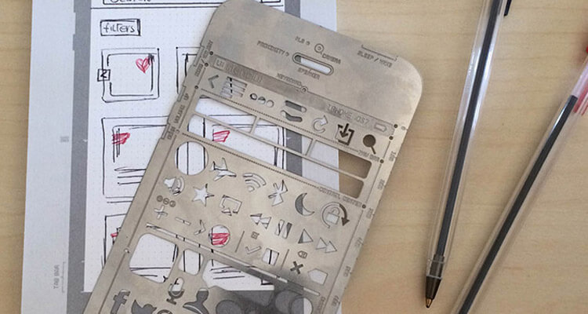

Pencils, Markers, Tapes, Scissors...It's fun right?
Back To Basics
With the advent of digital design tools – those of which encompass a wide range of design needs, from low-fidelity sketching to high-fidelity graphic design – less attention is gravitated towards traditional paper-based prototyping methods. Although paper prototyping is still perceived as a commonly applied alternative, many in the design community seem to consider it as the initial first step in the design process. In this respect, paper-based designs are typically only produced when teams ideate or brainstorm for ideas at the beginning of a project in question.
It is essential to have a different perspective on the role of paper prototyping. Fundamentally, paper prototyping shouldn’t be only perceived as an ideation technique. Rather, the process of paper prototyping should be effectively applied within an iterative manner itself. Instead of transitioning directly from basic brainstormed paper sketches to high-fidelity functional prototypes – designers should continue to develop their raw ideas on the space provided by the papers at their disposal as it can help create a quick representation of one’s designs and thoughts.
The Art Of Sketching
In Sketching User Experiences: The Workbook, Bill Buxton doesn’t necessarily distinguish the difference between paper-based prototyping and digital prototyping. Instead, he directs the readers’ focus towards the concept of “sketching” and the respective methodology behind it. As such, sketching doesn’t have to precisely rely on the usage of a pencil and papers, but essentially any techniques that base themselves on a certain number of ideals described in the book. In this respect, sketches should be quick to make, timely, inexpensive, disposable, and plentiful (Buxton, 2011)
Paper prototyping is meant to be quick, inexpensive, and insightful.
At the same time, they should also have a clear vocabulary, possess distinct gestures, consist of minimal detail, offer an appropriate degree of refinement, suggest and explore rather than confirm, and lastly present a sense of ambiguity (Buxton, 2011). Sketches don’t aim to offer the final solution to the design problem, but rather to invoke discussion and feedback around existing ideas and encourage designers to continuously refine them until what is agreed as the most fitting options are left on the table.
It's very rare that sketches can offer the "Eureka" solution to a design problem. Use sketches as a tool to invoke deeper collaborative discussion about an idea, scenario, or challenge at hand.
Why Sketching Is Important
In a way, this abstract concept of sketching touches on many of the characteristics that are also linked to paper-prototyping methods. Principally, designers are encouraged to optimize paper prototyping as much as possible due to the described ideals above. Accordingly, what these ideals hope to offer as the ultimate benefit is the gain in time and space for designers to keep flushing out the foundation of their ideas. The more that they can do this, the more user-centered their subsequent design solutions will be. Why? Because if more efforts and resources can be directed toward the refinement of the vision behind an idea, the opportunity for them to better concentrate on users’ value will also be larger.
Having multiple layers of refinement for a design can help teams discover user values previously hidden from the research stage. The "user-centered-ness" of the design process, in this sense, is further solidified.
This is a point that the authors of A value sensitive action-reflection model: Evolving a co-design space with stakeholder and designer prompts strive to prove through their experiment with the “action-reflection design model”, in which the objective is to develop a design environment where designers and users can collaborate on the creation of the product/application itself. In this respect, “prompts” exist throughout the process to “position stakeholders to articulate visions of yet-to-be-built tools and to explore how possible tools relate to the values of individuals, groups, and societies” (Yoo, Huldtgren, Woelfer, Hendry, and Friedman, 2013). Once the best and most value-sensitive design ideas have been refined, teams can now proceed to higher-fidelity stages within the design process.
It's Not As Hard As You Think
Some may experience difficulties when applying paper prototyping methods for usability testing purposes. Typically, paper-based prototypes work best for usability tests when they have been thoroughly sketched to closely represent product features from a visual perspective. Without the skills to produce such sketches, paper-based prototypes may not work as effectively as digitally designed mockups could do.
To take an example from a usablity project I worked on, where my goal was to discover usability issues while a user is navigating through an application that is heavily built with fancy micro-interactions. In this case, paper prototypes possibly would not have been effective due to the complexity of micro-interactions and their influences over the users' workflow.
Many toolkits exist to help ease the challenges faced with paper prototyping, which in turn serves to expedite the process even more.
Nonetheless, a wide range of design resources and kits exist today that can ease some of the challenges designers face in this aspect. For instance, sticky papers and pre-printed smartphone frames are commonly used within the industry today. If such limitations can be overcome, while paper prototyping is optimally utilized to evaluate and produce the best ideas, organizations will find themselves building products that focally revolve around not just their own design values, but also those of their target users.